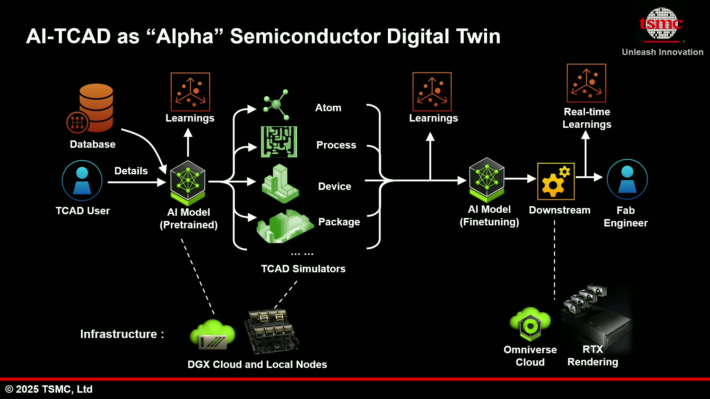
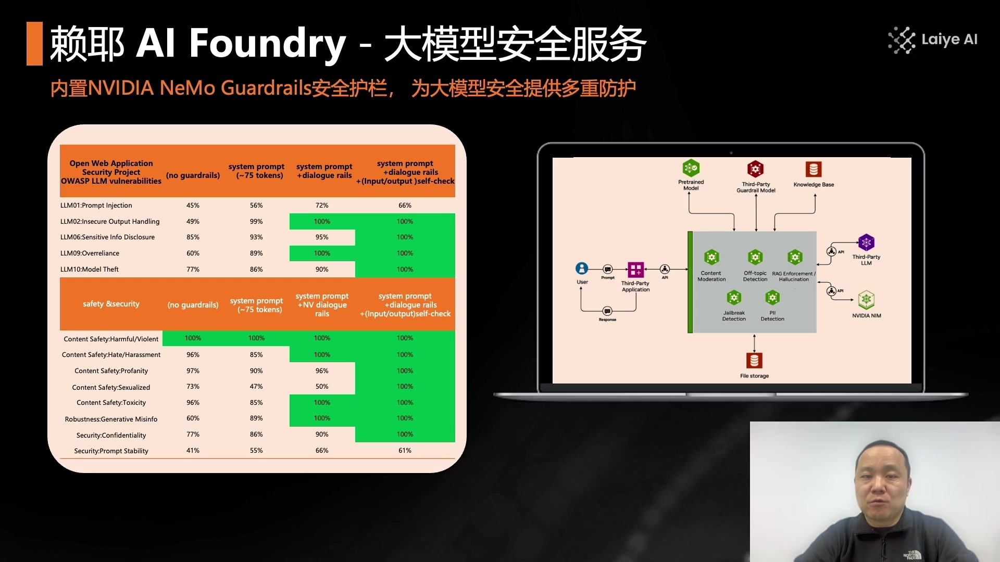
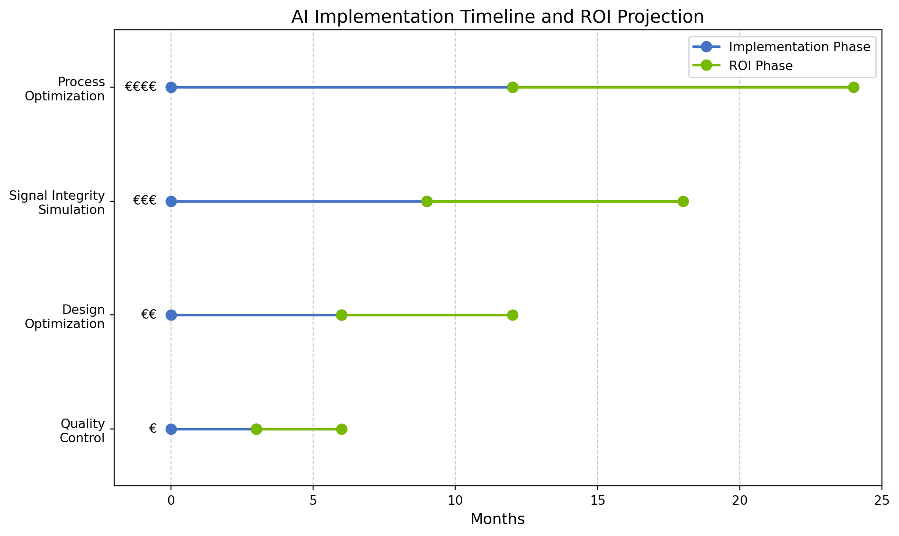

Both scale-up (within node) and scale-out (between nodes) communication flows
LLM Compute and Communication Profiling
1.6 AI-Powered Design Simulation
Advanced simulation capabilities can significantly improve product design and development:
Wind resistance prediction using parameter-based simulation
Reduced need for physical prototyping and testing
Early intervention in the design process
Significant time and cost savings in development
Wind Resistance Prediction Interface
1.7 AI for Semiconductor Manufacturing
The semiconductor industry demonstrates how AI can transform design and production processes:
Digital twin technology for semiconductor design
AI-accelerated simulation for faster iteration
Multi-scale modeling from atomic to system levels
AI-powered optimization of process parameters

AI-TCAD Digital Twin for Semiconductor Design
1.8 Enterprise AI Platform Integration
Comprehensive AI platforms enable efficient development and deployment of manufacturing solutions:
End-to-end integration from data collection to deployment
Multi-layer solutions for different development needs
Accelerated model training and optimization
Support for industry-specific applications and workflows

AI Enterprise Platform Architecture
2 III. Background Context
2.1 Company Background
Our company possesses core competencies in designing and manufacturing high-precision components with quick-to-ramp, high-volume production capabilities. Our collaborative relationships with industry-leading customers provide a unique competitive advantage. The trend toward miniaturization of electronic equipment has increased demand for precision micro-connectors, positioning us advantageously in the ICT industry.
Our connector products play a key role in the performance of electronic products, requiring high-quality transmission capabilities for telecommunications, data, power, and acoustics. Our experience in optimizing resource allocation enables rapid scaling of large-scale production of technically complex products, making us a preferred supplier for many prominent customers.
2.2 Relevant Events
Our recent technological breakthroughs include demonstrating PCIe 6.0 signal transmission through our CDFP SMT connector with Passive DAC cable and PCIe 7.0-capable transmission through OSFP-XD SMT connector with Passive DAC cable at DesignCon 2025.
Significant strategic partnerships have emerged, including our collaboration with Alphawave Semi, whose PipeCORE PCIe 6.0 Subsystem IP leverages our CDFP PCIe Direct Attach Cabling to enable disaggregated server resources within data center racks, delivering a maximum reach of 4 meters.
Additionally, our OSFP-XD SMT connector and Passive DAC cable works with Alphawave Semi’s 128 GT/PCIe 7.0 Performance System for Scale Up Networks, supporting a maximum reach of 2 meters for high-bandwidth-density scale-up resources within data centers.
These technologies cater to high-performance computing systems, data center switches, routers, and server configurations accommodating 112 Gbps and PCIe 6.0/7.0 protocols, supporting standards like IEEE 802.3ck, IEEE 802.3dj, OSFP-XD MSA specification, PCIe Gen6/Gen7 ecosystem, PCI-SIG CopprLink specification, and CXL Standard.
3 Executive Summary
3.1 AI-Driven Performance Improvements in Manufacturing
The following interactive visualization shows the improvements achieved by implementing AI technologies in different areas of interconnect manufacturing. The data is based on the analyzed notes, showing how AI technologies can significantly enhance manufacturing processes.
Code
performanceData = [ {area:"Quality Control",traditional:1.0,aiEnhanced:2.3}, {area:"Design Efficiency",traditional:1.0,aiEnhanced:1.8}, {area:"Time-to-Market",traditional:1.0,aiEnhanced:1.5}, {area:"Resource Utilization",traditional:1.0,aiEnhanced:1.6}, {area:"Defect Reduction",traditional:1.0,aiEnhanced:2.1}]// Create the visualization with PlotPlot.plot({marginLeft:120,marginRight:40,marginTop:40,marginBottom:40,height:400,x: {label:"Performance Multiplier",domain: [0.5,2.5],grid:true },y: {label:null,domain: performanceData.map(d => d.area) },color: {domain: ["Traditional Manufacturing","AI-Enhanced Manufacturing"],range: ["#808080","#76b900"],legend:true },marks: [ Plot.barX(performanceData, {y:"area",x:"traditional",fill:"Traditional Manufacturing",title: d =>`${d.traditional}x` }), Plot.barX(performanceData, {y:"area",x:"aiEnhanced",fill:"AI-Enhanced Manufacturing",title: d =>`${d.aiEnhanced}x` }), Plot.ruleX([1], {stroke:"#999",strokeDasharray:"4,4"}), Plot.text(performanceData, {x: d => d.aiEnhanced+0.1,y:"area",text: d =>`${d.aiEnhanced}x`,fontSize:12,fill:"#333",dx:5 }) ]})
(a)
(b)
Figure 1: AI-Driven Improvements in Manufacturing Quality and Efficiency
3.2 Network Technologies Evolution for AI Workloads
This interactive visualization tracks the evolution of network technologies and their bandwidth capabilities for AI workloads based on data from the notes. It illustrates the increasing bandwidth requirements and how different interconnect technologies are evolving to meet these needs.
Code
networkData = {const years = [2023,2024,2025,2026];const data = []; years.forEach((year, i) => { data.push({year,technology:"Traditional Ethernet",bandwidth: [100,200,400,800][i]}); data.push({year,technology:"AI-Optimized Ethernet",bandwidth: [200,400,800,1600][i]}); data.push({year,technology:"InfiniBand",bandwidth: [400,800,1600,3200][i]}); data.push({year,technology:"NVLink",bandwidth: [600,1200,2400,4800][i]}); });return data;}// Create the chart using Observable Plot (`Plot`)// Plot is typically available automatically in Quarto ojs chunksPlot.plot({title:"Network Bandwidth Evolution for AI Workloads",// width: 700, // Plot often sizes well automatically, but you can set it// height: 400,marginLeft:70,// Adjust margins if needed for labelsmarginRight:50,// --- Configure Scales ---x: {domain: [2022,2027],// Match the domain from Vega-Litelabel:"Year",// X-axis labeltickFormat:"d"// Format ticks as integers (e.g., 2023) },y: {type:"log",// Use a log scale for the y-axisbase:2,// Set the log base to 2label:"Bandwidth (Gbps)",// Y-axis labelgrid:true// Add horizontal grid lines for readability },color: {legend:true,// Show the color legend// scheme: "tableau10" // Optional: Choose a specific color scheme },// --- Define Marks (Layers) ---marks: [// Draw the lines Plot.lineY(networkData, {x:"year",y:"bandwidth",stroke:"technology",// Color the lines by technologystrokeWidth:3,// Set line thickness }),// Draw the points on top of the lines Plot.dot(networkData, {x:"year",y:"bandwidth",fill:"technology",// Color the points by technology (matches line stroke) }),// Add tooltips that appear on hover Plot.tip(networkData, Plot.pointer({ // Use pointer for hover interactionx:"year",y:"bandwidth",// Define what channels appear in the tooltipchannels: {"Year": {value:"year",format:"d"},// Format year nicely"Technology":"technology","Bandwidth (Gbps)":"bandwidth" } })) ],// --- Interactivity (Optional) ---// Basic zoom/pan requires @observablehq/plot version 0.6.12+ (check your Quarto version)// zoom: true })
(a)
(b)
Figure 2: Evolution of Network Bandwidth for AI Workloads
3.3 Network Utilization Efficiency with AI Optimization
This visualization shows how AI-optimized networks improve utilization efficiency compared to traditional networks, based on data from Spectrum-X and other network technologies mentioned in the notes.
Code
utilizationData = [ {year:2023,technology:"Traditional Networks",utilization:60}, {year:2024,technology:"Traditional Networks",utilization:60}, {year:2025,technology:"Traditional Networks",utilization:60}, {year:2026,technology:"Traditional Networks",utilization:60}, {year:2023,technology:"AI-Optimized Networks",utilization:75}, {year:2024,technology:"AI-Optimized Networks",utilization:85}, {year:2025,technology:"AI-Optimized Networks",utilization:90}, {year:2026,technology:"AI-Optimized Networks",utilization:95}]// Create the chart using Observable Plot - Line Chart VersionPlot.plot({// Changed title to focus on the trend comparisontitle:"Network Utilization Trend: AI-Optimized vs. Traditional",marginLeft:60,// --- Configure Scales ---x: {domain: [2023,2026],// Optional: Pad domain slightlylabel:"Year",// Ensure years are treated as distinct points. Adding interval='year' can help.tickFormat:"d" },y: {domain: [50,100],// Keep Y-axis domain from 0 to 100 for contextlabel:"Network Utilization (%)",grid:true },color: {legend:true },// --- Define Marks (Layers) ---marks: [// Draw lines connecting the points for each technology Plot.line(utilizationData, {x:"year",y:"utilization",stroke:"technology",// Color the lines by technologystrokeWidth:2.5, }),// Add points at each data point for clarity Plot.dot(utilizationData, {x:"year",y:"utilization",fill:"technology",// Match point color to line color }),// Add tooltips Plot.tip(utilizationData, Plot.pointer({ x:"year",y:"utilization",title: d =>`${d.technology}\nYear: ${d.year}\nUtilization: ${d.utilization}%` })) ]})
(a)
(b)
Figure 3: Network Utilization Improvement with AI Optimization
3.4 Transforming Manufacturing with AI-Driven Software
Our analysis reveals four critical areas where AI-driven software solutions can transform interconnect manufacturing operations:
Quality Control and Defect Detection
The manufacturing of precision connectors demands exceptionally high quality standards and zero-defect production goals. AI-powered visual inspection systems represent a significant opportunity to enhance quality control processes through:
Automated Defect Detection: Computer vision systems trained on comprehensive defect libraries that can identify anomalies invisible to the human eye
Real-time Quality Monitoring: Continuous inspection systems that provide immediate feedback on production quality
Root Cause Analysis: AI models that correlate defects with production parameters to identify underlying causes
Predictive Quality Control: Anticipating potential quality issues before they occur by identifying patterns in production data
Computer-Aided Design Optimization
The increasing complexity of interconnect designs, particularly for high-speed applications like PCIe 6.0/7.0, creates opportunities for AI-assisted design optimization:
Requirement-Driven Design Generation: AI systems that can propose initial designs based on performance requirements
Design Variation Exploration: Automated exploration of design alternatives to optimize for specific parameters
Parameter Optimization: Fine-tuning design variables to achieve optimal electrical performance
Design Standardization: Identifying common patterns across successful designs to establish best practices
Signal Integrity Simulation
As data rates increase toward 800 Gbps and beyond, signal integrity modeling becomes increasingly critical and computationally intensive:
AI-Accelerated Simulation: Reducing computation time for electromagnetic simulations through machine learning models
Surrogate Modeling: Training AI models to approximate complex physical simulations for rapid design iteration
Parameter Sensitivity Analysis: Identifying critical design parameters that most impact signal integrity
Cross-Talk Prediction: AI models trained to predict interference patterns in complex connector arrays
Manufacturing Process Optimization
Production efficiency and adaptation to varying product requirements are key competitive advantages:
Production Parameter Optimization: AI algorithms that continuously adjust manufacturing parameters for optimal quality and throughput
Predictive Maintenance: Early identification of equipment issues before they impact production
Process Digital Twins: Virtual representations of production lines that enable simulation and optimization
Yield Optimization: Machine learning models that identify subtle correlations between process variables and product yield
Code
import matplotlib.pyplot as pltimport numpy as npimport pandas as pdimport json# Create figure fig, ax = plt.subplots(figsize=(10, 6))# Implementation phases and ROI timelinephases = ['Quality\nControl', 'Design\nOptimization', 'Signal Integrity\nSimulation', 'Process\nOptimization']implementation_time = [3, 6, 9, 12] # months to implementroi_time = [6, 12, 18, 24] # months to ROIinvestment_level = [1, 2, 3, 4] # relative investment needed# Plot implementation phasesfor i, (phase, imp_time, roi_time, inv) inenumerate(zip(phases, implementation_time, roi_time, investment_level)):# Plot implementation period plt.plot([0, imp_time], [i, i], 'o-', linewidth=2, color='#4472C4', markersize=8)# Plot ROI period plt.plot([imp_time, roi_time], [i, i], 'o-', linewidth=2, color='#76b900', markersize=8)# Add investment level indicator plt.text(-0.5, i, '€'* inv, va='center', ha='right', fontsize=10)# Set up the axesplt.xlim(-2, 25)plt.ylim(-0.5, len(phases)-0.5)plt.yticks(range(len(phases)), phases)plt.xlabel('Months', fontsize=12)plt.grid(True, linestyle='--', alpha=0.7, axis='x')# Add a legendfrom matplotlib.lines import Line2Dlegend_elements = [ Line2D([0], [0], color='#4472C4', marker='o', linewidth=2, markersize=8, label='Implementation Phase'), Line2D([0], [0], color='#76b900', marker='o', linewidth=2, markersize=8, label='ROI Phase')]plt.legend(handles=legend_elements, loc='upper right')# Add titleplt.title('AI Implementation Timeline and ROI Projection', fontsize=14)plt.tight_layout()plt.show()

Figure 4: ROI Timeline for AI-Driven Manufacturing Investments
3.5 Implementation Strategy for AI-Driven Software Solutions
Based on our analysis, we recommend a phased implementation approach:
Phase 1: Quality Control Enhancement (Months 0-6)
Begin with AI-powered visual inspection as it offers the quickest return on investment and addresses a critical business need:
Initial Implementation: Deploy machine vision systems at critical inspection points
Data Collection: Build a comprehensive library of defect types and quality parameters
Model Training: Develop initial detection models focused on common defect types
Validation: Compare AI detection with human inspector results to refine the system
Expected Outcome: 20-30% reduction in quality escapes within six months
Phase 2: Design Automation Tools (Months 6-12)
Implement AI-assisted design tools to accelerate product development:
Design Parameter Database: Catalog successful designs and their performance characteristics
Initial Automation: Implement tools for automated initial design generation based on requirements
Performance Prediction: Develop models to predict electrical performance based on design parameters
Design Validation: Integrate with simulation tools for automated design validation
Expected Outcome: 40-50% reduction in design iteration cycles within twelve months
Phase 3: Advanced Signal Integrity Simulation (Months 12-18)
Enhance signal integrity modeling capabilities through AI-accelerated simulation:
Simulation Database: Build a library of simulation results for various connector configurations
Surrogate Model Development: Train AI models to approximate simulation results
Hybrid Approach: Combine traditional physics-based simulation with AI-accelerated methods
Parameter Optimization: Implement automated parameter sweeps for design optimization
Expected Outcome: 80% reduction in simulation time while maintaining accuracy within eighteen months
Phase 4: Manufacturing Process Optimization (Months 18-24)
Implement comprehensive process optimization through digital twin technology:
Process Instrumentation: Deploy additional sensors for comprehensive process monitoring
Digital Twin Development: Create virtual representations of production lines
Process Optimization Models: Develop AI models for automated parameter adjustment
Closed-Loop Control: Implement feedback systems for real-time process optimization
Expected Outcome: 15-20% increase in production efficiency within twenty-four months
3.6 Technology Requirements and Ecosystem Integration
To successfully implement these AI-driven solutions, specific technological capabilities will be required:
Computing Infrastructure
GPU Clusters: Dedicated resources for model training and simulation
Edge Computing: Distributed processing capability for real-time analysis at production lines
Storage Systems: High-performance storage for large datasets of images and simulation results
Software Framework
AI Development Platform: Tools for model development, training, and deployment
Simulation Integration: APIs for connecting AI systems with existing CAD and simulation software
Production System Integration: Connections to MES, ERP, and quality management systems
Data Management
Data Collection Framework: Systems for gathering and organizing production and quality data
Annotation Pipeline: Tools for labeling and preparing training data
Version Control: Management of model versions and training datasets
Skills and Knowledge
AI Expertise: Internal capabilities or partnerships for AI model development
Domain Knowledge Integration: Methods for capturing manufacturing expertise in AI systems
Training Programs: Educational resources for staff working with new AI tools
4 Conclusion
The integration of AI-driven software solutions into interconnect manufacturing represents a significant opportunity to enhance quality, accelerate design processes, improve signal integrity modeling, and optimize production efficiency. As demonstrated in this analysis, these technologies can provide substantial competitive advantages in an increasingly demanding market.
Our company is well-positioned to leverage these technologies due to our existing expertise in high-precision manufacturing and our strategic partnerships with technology leaders. By adopting a phased implementation approach focused on clear business outcomes, we can manage investment risks while progressively transforming our operations.
The recommendations provided in this summary offer a strategic roadmap for integrating AI technologies into our core processes, prioritizing applications with clear ROI while building a foundation for more advanced capabilities. Through thoughtful implementation of these AI-driven software solutions, we can strengthen our position as a leader in high-performance interconnect manufacturing.